WEEK 2 � NUMBER THEORY FOUNDATIONS
What This Week Is About
In Week 1, we focused on how mathematicians prove
things: how to explain why a statement must always be true, not just why it
seems to work in examples.
In Week 2, we turn our attention to what
mathematicians often prove things about first.
One of the earliest and most important areas of
proof-based mathematics is number theory � the study of integers and their
properties. This includes ideas like divisibility, remainders, parity (odd and
even numbers), and patterns that emerge when numbers are grouped or compared in
structured ways.
None of this material requires advanced background. In
fact, most of the ideas in this week come from familiar arithmetic. The
difference is that now we will look at those ideas more carefully, using
definitions and logical structure rather than intuition alone.
This week is about learning to see structure inside numbers, and then explaining that structure clearly and
rigorously.
Why Number Theory Matters
Number theory appears everywhere in mathematics:
But perhaps most importantly, number theory is where
many students first learn how to turn simple observations into full proofs.
Statements like:
may feel obvious at first glance. However, explaining why
these statements must always be true � and doing so cleanly and convincingly �
is a skill that takes practice.
Week 2 is about developing that skill in a setting
where the ideas are familiar, but the reasoning is deeper.
How This Week Connects to Week 1
In Week 1, you learned several proof techniques:
In Week 2, you will use those same techniques, but now
in the setting of number theory.
There is no new proof method introduced this week.
Instead, the focus is on learning how to apply proof techniques to numerical
structure.
If Week 1 taught you how to write proofs,
Week 2 teaches you what kinds of statements proofs are often built from.
Proof-Writing Rubric
For each written solution, rate the following
categories from 0 to 4.
A. Structure (0�4)
B. Rigor & Correctness (0�4)
C. Clarity (0�4)
D. Insight / Strategy (0�4)
Core Number Theory Lessons You�ll Use
Everywhere
A gentle conceptual toolkit before the problems
Before jumping into problems, let�s pause and look at
the ideas you�re about to use.
This week is not about tricks.
It�s about learning how mathematicians organize numbers into structures so that
proofs become possible.
⭐ Lesson 1 �
Definitions are the engine of proofs
In Week 1, you learned that proofs start from clear
assumptions.
In number theory, this often means rewriting familiar
words like:
into algebraic form.
For example:
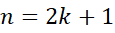
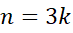
This translation step is not cosmetic.
This step is where proofs begin.
⭐ Lesson 2 � We reason
about forms,
not examples
�Proofs work with forms, not examples�
Checking examples can build intuition, but examples
never prove anything for all integers.
Proofs work by manipulating general forms:
When you work (reason) with these forms, you are
proving statements about all integers at once.
That�s a huge conceptual shift � and a powerful one.
⭐ Lesson 3 � Modular
arithmetic is about remainders, not size
Modular arithmetic answers one simple question:
What remainder is left when we divide by a fixed
number?
Instead of tracking infinitely many integers, we group
them into a small number of remainder cases.
For example, modulo 3:
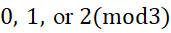
That�s it.
No matter how large the number is, it must land in one of those categories.
This idea will quietly reappear throughout higher
mathematics.
Modular arithmetic is classification
Modular arithmetic is not about large numbers � it is
about remainders.
This allows infinite cases to collapse into a few
manageable ones.
⭐ Lesson 4 �
Structure reveals impossibility
Some proofs don�t show that
something exists.
They show that something is impossible.
By combining:
you can rule out entire classes of numbers logically.� not by guessing, but by logic.
This is one of the most satisfying moments in
proof-based math.
By combining definitions, algebra, and modular
reasoning,
Now that you�ve seen the ideas themselves, you�re
ready to use them.
Week 2 Problem Set
Try these first � then enjoy the guided solutions.
These problems are carefully chosen to help you practice
proof-writing in number theory, not to overwhelm you with computation.
They are designed to be:
Remember:
The goal is clarity, not speed.
Struggle a little � that�s where the learning happens.
Problem 1 � Even and Odd Numbers
What this is about
This problem revisits the idea of even and odd numbers,
but now from a proof-writing perspective.
You already know what even and odd numbers are.
Here, the goal is not to compute � but to explain.
Why it matters
Parity arguments (odd vs. even) are some of the most
common tools in number theory and combinatorics.
Many proofs � especially proofs by contradiction �
begin by examining whether a number is even or odd.
Learning to use these ideas cleanly will serve you far
beyond this week.
What the problem is really asking
You are being asked to take a statement that feels
obvious and prove it using definitions, not examples.
This is exactly the kind of reasoning mathematicians
value.
The approachable idea
An integer is odd if and only if it can be written in
the form:
Once you rewrite the statement using this definition,
the algebra becomes straightforward.
Solve
Prove that if is odd, then 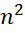is also odd.
Problem 2 � Divisibility by 3
What this is about
This problem explores divisibility by 3, using
algebraic structure instead of trial-and-error or examples.
Why it matters
Divisibility arguments are often used to show that:
This kind of reasoning appears constantly in number
theory.
What the problem is really asking
You are being asked to prove a statement that holds
for all integers, not just a few cases.
That means translating words like �divisible by 3�
into algebra, and then reasoning symbolically.
The approachable idea
If a number is divisible by 3, it can be written as:
Once written this way, addition and multiplication
preserve divisibility in very clean ways.
Solve
Prove that if an integer is divisible by 3,
then is divisible by 3.
Problem 3 � Squares Modulo 3
What this is about
This problem introduces modular arithmetic in a gentle
and structured way.
Instead of focusing on large numbers, we focus on remainders.
Why it matters
Modular arithmetic allows us to group infinitely many
numbers into a small number of cases.
This makes it a powerful tool for reasoning about
patterns and impossibilities.
What the problem is really asking
You are being asked to classify all possible
remainders a square can have when divided by 3.
Rather than checking infinitely many integers, you
will analyze a small number of cases.
The approachable idea
Every integer leaves a remainder of:
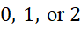
when divided by 3.
Instead of checking every integer, check these three
cases � and square them.
Solve
Show that for any integer :
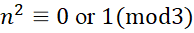
Problem 4 � Numbers of the Form
What this is about
This problem builds directly on Problem 3 and uses
modular reasoning to prove an impossibility result.
Why it matters
Many strong proofs don�t show that something exists �
they show that something cannot happen.
This problem is a classic example of that style of
reasoning.
What the problem is really asking
You are being asked to use modular arithmetic to rule
out an entire class of numbers as perfect squares.
The approachable idea
From Problem 3, you know what remainders squares can
have modulo 3.
Compare that with the remainder of numbers of the form
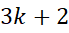.
Solve
Show that no integer of the form can be a perfect
square.
Problem 5 � Pigeonhole Principle (A
First Taste)
What this is about
This problem introduces a counting idea known as the pigeonhole
principle.
It appears in many areas of mathematics, including
number theory and modular arithmetic.
Why it matters
The pigeonhole principle shows that certain
coincidences must occur � not by calculation, but by counting possibilities.
What the problem is really asking
You are being asked to show that when there are more
objects than categories, at least two objects must share a category.
The approachable idea
When dividing integers by 3, there are only three
possible remainders.
If you choose more integers than that, repetition
becomes unavoidable.
Solve
Show that among any 4 integers, at least two have the
same remainder when divided by 3.
SOLUTIONS � WEEK 2
Solution 1 � Odd Squares
Assume is odd. By definition, there exists an integer such that
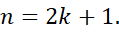
Now square both sides:
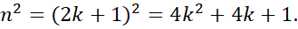
Rewrite this expression:
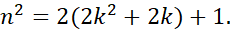
Since 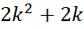is an integer, this
shows that has the form 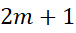, and is therefore
odd.
Solution 2 � Divisibility by 3
If is divisible by 3,
then there exists an integer such that
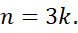
Squaring both sides gives:
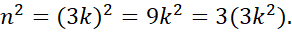
Because 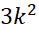is an integer, this
shows that is divisible by 3.
Solution 3 � Squares Modulo 3
Every integer is congruent to exactly one of the
following modulo 3:
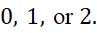
Now square each case:
Thus, for any integer ,
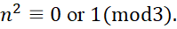
Solution 4 � Numbers of the Form
From Solution 3, we know that perfect squares can only
be congruent to 0 or 1 modulo 3.
Any integer of the form satisfies:
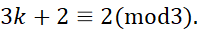
Since 2 is not a possible remainder for a square
modulo 3, no integer of the form can be a perfect
square.
Solution 5 � Pigeonhole Principle
When dividing integers by 3, there are exactly three
possible remainders:
If you choose 4 integers, each must belong to one of
these three remainder categories.
Because there are more integers than categories, at
least two of the integers must share the same remainder when divided by 3.
Concluding Discussion
This week introduced number theory as a way of finding
structure inside integers.
You learned how:
These ideas will continue to appear in later weeks,
combined with more advanced techniques. The central theme remains the same:
Mathematics is not about guessing patterns � it is
about explaining why patterns must hold.
Week 2 Summary
and Reflection��������������������������������������������������������
What you just learned � and why it matters
If Week 1 was about learning how to prove things,
Week 2 was about learning what kinds of statements are worth proving first.
This week, you worked with some of the simplest
objects in mathematics � the integers � and discovered that they hide a
surprising amount of structure.
What you learned this week
By the end of Week 2, you have practiced how to:
These are not small skills.
They are foundational.
Why this kind of thinking is powerful
Notice how little computation was required in this
week�s problems.
Most of the work happened before any algebra:
This is exactly how mathematicians approach harder
problems.
They don�t calculate first.
They organize the situation.
A quiet milestone
At this point, you are no longer just �doing math
problems.�
You are learning how to:
That shift is subtle � but important.
It�s also the point where many students begin to feel
that math is less about speed and more about insight.
Looking ahead
The ideas from this week will keep returning:
You won�t be starting from scratch � you�ll be
building upward.
Final encouragement
If some of these ideas felt slow or unfamiliar, that�s
normal.
Proof-based mathematics rewards patience.
Every time you rewrite a definition carefully,
every time you pause to ask �what cases are
possible?�,
you are thinking like a mathematician.
That skill compounds.
And you�re doing it.